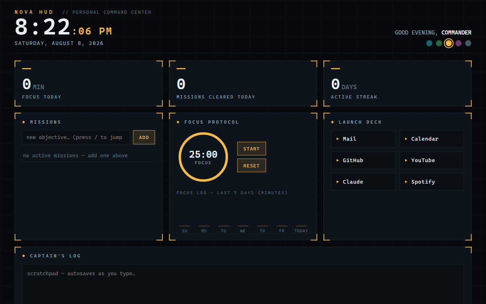
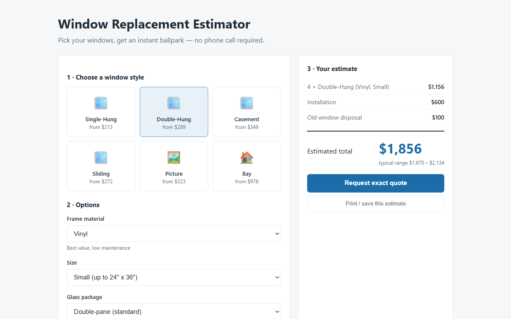
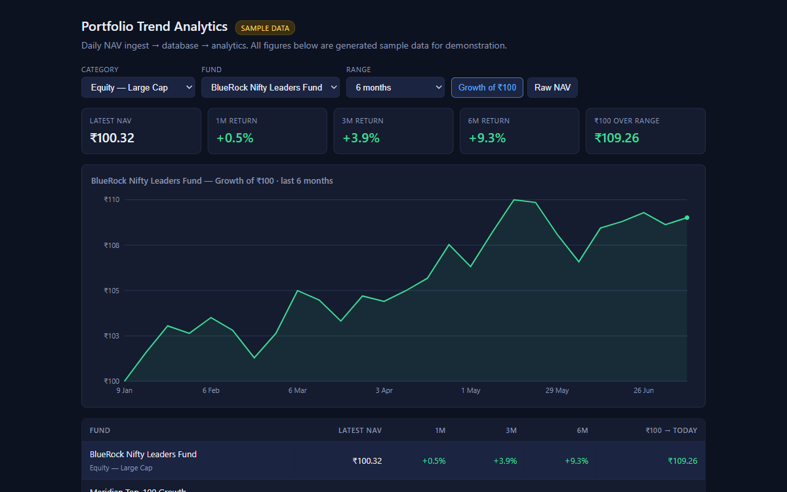

Everything for sale
The shop
Prices are real; the checkout is not open yet.
Nothing on this page can be bought today. Payments need an account owned by an adult, and that is not set up yet. The prices are real and they are what these will cost.
The Style Mirror is free, works now, and stays free.
Style Engine Pro
$8 / monthThe paid half of the tool you're already using: drafting in your measured voice, model-graded feedback on your drafts, and test prep from your own notes.
Not buyable yetNOVA HUD
$9 once
A sci-fi dashboard in one HTML file. No install, no dependencies, no server — open it and it runs. Clock, pomodoro timer, system readouts, animated rings, and a launch deck of your own links.
Not buyable yetWindow Replacement Estimator
$19 once
A quote calculator a contractor can put on their own site. Pick frame material, count the windows, flag the ones above the ground floor, and it prices the job while the customer is still reading.
Not buyable yetPortfolio Trend Dashboard
$14 once
A holdings-over-time dashboard that runs from a file. Switch between asset classes, read the curve, see the table underneath it — no build step, no chart library, no network calls.
Not buyable yet"11 words a sentence" tee
$24 onceMy own measured sentence length, printed small on the chest. Nobody will get it. That's the point.
Not buyable yet
{kind=link}
{kind=link}
{kind=link}